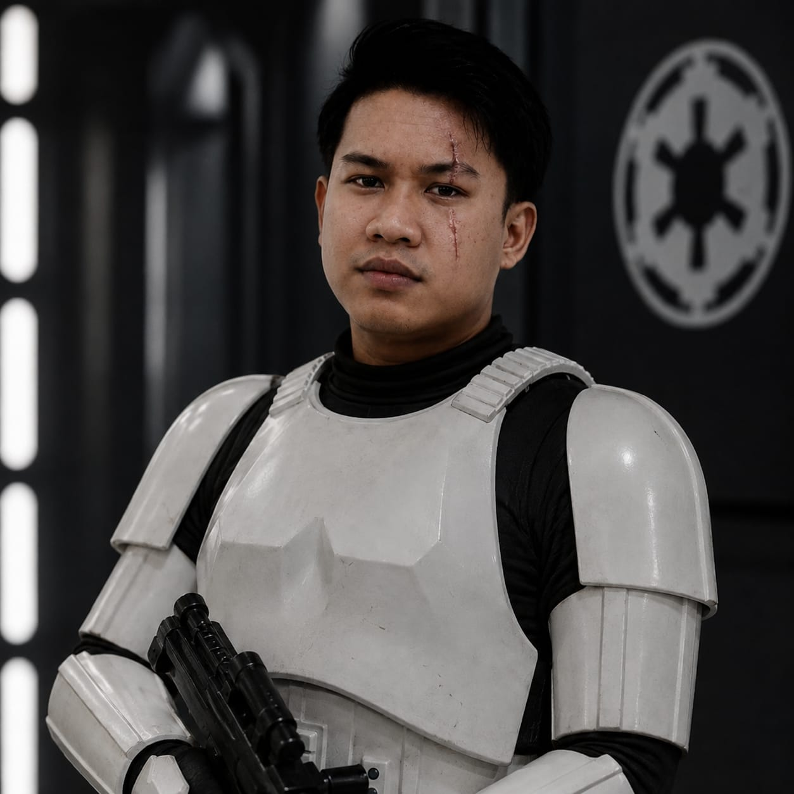

CIMB Niaga
Zoom and Teams Rooms Solution
Transmission incoming
A long career in a galaxy not so far away
Manager Pre-Sales Engineer
Architecting enterprise Unified Communications, Video Conferencing, Telephony solutions, and Audio Visual. Turning complex requirements into deployed reality.

Transmission
A signal from across the galaxy.
The Journey
Eight years, five organizations, one trajectory: from hands-on technician to leading enterprise solution design.
Lead the Pre-Sales team, monitor KPIs, develop skills and certifications, author technical proposals and SoWs, and run workshops to prove solution feasibility and business value.
Assigned and coordinated the Pre-Sales team while installing and configuring Zoom and Microsoft Teams ecosystems, running demos and commissioning projects.
Installed and troubleshot video conference devices (Poly, Neat, Cisco, Logitech, Jabra), built Zoom and Teams Rooms solutions, and created solutions for customer needs.
Installed and troubleshot IPPBX, VoIP Gateway and Telephony network systems, ran PoCs and built relationships with principals for new projects.
Managed vendors and timelines for new store openings, scouted strategic locations, and maintained building systems across the retail network.
Installed and troubleshot CCTV for retail and enterprise, monitored and commissioned projects, and delivered product presentations and PoCs.
Installed and troubleshot CCTV, access door and access control systems for retail and enterprise customers.
Deployments
Enterprise collaboration solutions delivered for Indonesia's leading institutions.
Zoom and Teams Rooms Solution
Zoom Rooms Solution
Zoom Phone, Cisco Unified Communication Manager and Telephony System
Teams Rooms Solution
Zoom Workspace, Phone and Rooms
Teams Rooms Solution
Offision Booking System
The Arsenal
Training
Core Systems
Open Channel
Let's design the collaboration architecture your organization needs.